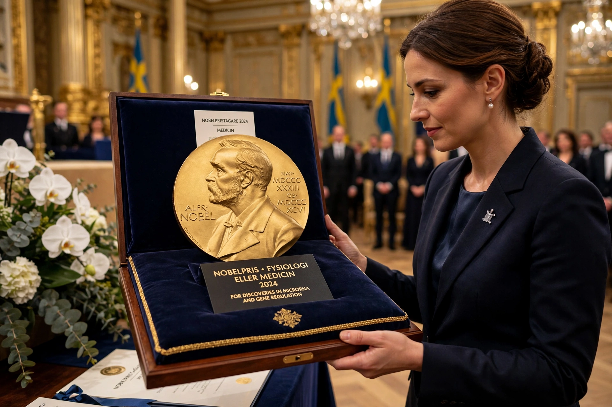

The Nobel Prize in Physiology or Medicine is awarded yearly by the Nobel Assembly at the Karolinska Institute for outstanding discoveries in physiology or medicine. It is one of the five Nobel Prizes established by Alfred Nobel's 1895 will, first awarded in 1901 — to Emil von Behring for serum therapy.

Laureates include Alexander Fleming (penicillin), Frederick Banting (insulin), and — in 1950 — Edward Kendall, Tadeus Reichstein and Philip Hench for discoveries relating to the hormones of the adrenal cortex, the work behind cortisone, prednisone and modern treatment of autoimmune disease. More recent prizes honored mRNA vaccine technology (2023) and microRNA (2024).
The prize is announced in early October and presented on 10 December, the anniversary of Nobel's death, in Stockholm. It may be shared by at most three people and cannot be awarded posthumously.
Debates have included overlooked contributors, the exclusion of deceased scientists such as Rosalind Franklin, and some awards later questioned by new evidence.